1928—The New-Way Course in Millinery and Hat Design
Lesson 13—Flowers & Bows
The Use of Bows in Millinery
A bit of ribbon twisted into an odd, attractive shape; yards of grosgrain transformed into a gay rosette; a spider bow; a butterfly bow; these are the touches that add originality and distinction to the hat. It may be just a yard or two of ordinary ribbon—but if you know how to apply it to your hat, you can achieve a trimming that is as charming as it is neat and correct.
We say correct, for the bow trimming seems to be appropriate for almost all types of hats. It can be combined with flowers and other trimmings. When used alone it is a splendid trimming and finish in one. When combined with other trimmings, it serves not only as a finish, but enhances the entire appearance of the hat. As an expert and fashionable milliner you should be deft and clever in the making of bows, and if you study the following paragraphs carefully, you will be.
One of the most important things to remember in bow-making is that the ribbon must always be kept right side out. The ribbon must be so handled that none of the newness is lost; when the bow is finished, the ribbon should be as fresh and crisp as when purchased, and the lustre should be unimpaired. Also remember, in bow-making, that the loops should be correctly placed.
Ribbon-work, or bow-making, is not difficult, but here again the whole secret of success is practice. Tie the bows taught here over and over again, until you achieve the desired effect. Do not be satisfied with a pretty bow; achieve a beautiful, perfect bow.
For practice work, sateen should be used as a substitute for ribbon. Ribbon is too expensive for practice, and in sateen both right and wrong sides are clearly discernible.
The bows taught in this lesson are those most frequently used. Of course, you need not follow the directions exactly after you have once mastered the making of the bow. For instance, if you practice the triple bow over and over again until you can make a perfect one, you can then proceed to vary the steps to your taste, creating new and original variations. For the present, however, it is best to follow each step carefully and omit not even the slightest detail.
The Triple Bow
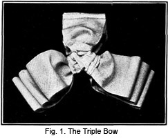This is a most attractive type of bow, and when the loops of one group are made longer than the rest, it makes a charming "stick-up." To make the triple bow, you will require one and three-quarter yards of three-inch ribbon for a bow measuring seven inches across. For a larger bow, more ribbon is required.
1. Cut the ribbon in three equal lengths and from each piece cut 3 inches. This is for the center finish.
2. Then cut each piece of ribbon in three lengths, graduating them in this manner: the first five and one-half inches of ribbon, the second six inches of ribbon, the third six and one-half inches of ribbon.
3. Beginning at one end of the five and one-half inch strip of ribbon, make two or three small plaits, all turning one way. At the opposite end of this strip of ribbon make the same number of small plaits, but this time turning in the other direction.
4. Now bring the two plaited ends together, forming a loop. The ribbon should be right side out.
5. Proceed to arrange the six-inch length and the six and one-half inch length in the same manner.
6. Assemble these loops, placing the longest first, the middle size next, and the smallest last—one on top of the other.
7. Sew firmly together at the plaited end.
8. Assemble the remaining groups in the same way.
9. Proceed to sew these groups together at their base, making the three groups form a letter Y. As the corners only are sewed together, a small opening will remain in the center.
10. Now take the small pieces of ribbon saved for the center finish. Plait each piece from end to end in small plaits slightly on the bias. The plaits at one end should turn in the opposite direction from the ones at the other end.
11. Cover the center of each group of loops with one of these plaited pieces, pulling the plaits so that the center of the bow is well covered.
12. To finish, slip the fingers between the ribbon in the loops and give a quick, light pull. This puffs out the ribbon attractively.
The Spider Bow
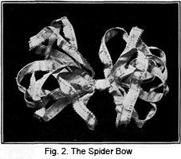Although the name seems to imply an intricate and mysterious sort of bow, the spider bow is really quite simple. But it is extremely attractive, and is often used as the sole trimming on a hat. Its very simplicity gives it charm. You may make the spider bow of any size you wish, but let us practice with No. 5 ribbon. The bow illustrated is made of No. 5 picot edge ribbon.
You will require four and one-half yards of this ribbon. To make the bow, follow these simple steps:
1. Fold one edge of the ribbon over one-quarter of an inch and stitch on the machine with silk of a matching color.
2. This forms a casing through which now run a fine hat wire.
3. Now form loops from side to side, making each loop one inch shorter than the one before, and holding them exactly in the center. Allow a short end of the ribbon for a center finish.
4. Wind the end of the ribbon around the loops at the center t and sew at the back to hold in place.
5. Pull the loops out and bend to give the bow knot effect. Be very careful to keep the ribbon right side out. If you use good taste and make your loops correctly, you will have a pretty, attractive bow.
The Butterfly Bow
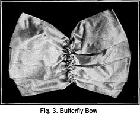Here is a bow that does justice to its name. When made of fine ribbons, it is as attractive as you could wish a hat trimming to be. It is so made that both sides of the ribbon show in the loops, thus you can achieve a truly delightful effect by using two-tone ribbon. In this way you can more clearly simulate the colorful wings of the butterfly.
To make the butterfly bow, you will need three yards of No. 60 ribbon, and one yard of baby ribbon to match or of a contrasting color.
1. Place the ribbon on the table, right side up. From the left end of the ribbon, measure fourteen inches. Mark this point with a pin at the top of the ribbon. Always use the finest pins obtainable in ribbon-work, otherwise the pinholes will mar your work.
2. Fold the ribbon back to the left, to the end of the ribbon.
3. Then turn it half-way over so that the pin at the top meets the end of the ribbon at the lower edge.
4. Now measure fourteen inches from the pin, and mark this second fourteen-inch point with a pin in the top of the ribbon.
5. Fold the ribbon over to the right, bringing the second pin on a line with the first pin.
6. Proceed to fold the ribbon half-way over and pin in place, being sure that the pins marking the fourteen-inch lengths are in the center of the loops and that the folded edges are one inch apart.
7. Continue in this way until you have four loops on one side and three loops on the other. There will be an end of ribbon on one side.
8. Bias this end as illustrated.
9. Baste the baby ribbon across these loops, allowing one inch space between them. This will bring the lines of baby ribbon one-half inch on both sides of the center row of pins on the folded ribbon.
10. Now stitch these strips of baby ribbon at both edges, making two casings through which to draw fine wire. This wire holds the bow in position. Use lace wire, as it is the best for this purpose.
11. When the wire is drawn through the casings and the bastings are removed, draw the ribbon up on the wire and twist the two ends together at the top of the bow. Then turn these ends under so that they do not show from the top.
12. Arrange the wires at the lower side in the same way.
13. The wire arrangement draws up the bow to form the body of the butterfly.
14. Be sure to arrange the loops so that they do not appear stiff and flat. Puff them out with your fingers.
The Alsatian Bow
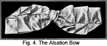When made of satin ribbon, the fancy alsatian bow is extremely beautiful. It must be carefully made, faultlessly neat and well finished. It is the ideal trimming for the hat of the young girl.
To make the alsatian bow, you must have two and one-sixth yards of ribbon, four and one-half inches wide.
1. Cut off three inches for the center finish of the bow.
2. Mark a point four inches from the center of the long piece of ribbon.
3. Lay this ribbon flat on the table, right side down.
4. On both sides of the mark, make a loop eight inches long and pin carefully in place.
5. Make a six-inch loop on top of these, and pin in place.
6. Make a four-inch loop on top of these six-inch loops, and pin these in place.
7. This will give you six loops all together. It will use up all the material on one side, and leave a four-inch end on the other.
8. Make a small two-inch loop of the four-inch end.
9. Proceed to sew all loops firmly in place, and draw them up the least bit before applying the center finish.
10. To achieve this center finish, make a box plait of the three- inch piece of ribbon. Fasten one end of it to the back of the bow and bring it across the front, covering the center finish. Fasten the other end at the back.
11. Now turn each of the four corners of the loop down as illustrated. To finish, tack over the opposite corners on the other end of the bow.
The Wing Bow
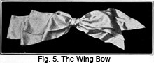This bow makes a trimming that is as appropriate for the young girl as it is for the older woman. You will need two and one-half yards of No. 50 ribbon to make it.
1. Measure a point twenty inches from the end of the ribbon and mark.
2. Form a loop of this.
3. Eighteen inches below the turn of this loop, cut the ribbon on the bias. The longest point of the bias should be exactly at the eighteen-inch mark.
4. Now make another loop and end, the top of the loop being one inch below the top of the first loop. The end of this loop should be one inch shorter than the first end.
5. Make still another loop one inch shorter than the second one, biasing the end of the ribbon as before. This end should be one inch shorter than the last end cut.
6. Arrange these loops one on top of the other. The longest should come first, then the middle size, then the shortest.
7. Proceed to run a shirring thread through the three loops at their lower edge. These loops should be right side out and the ends wrong side out. Draw up on the shirring string and give each end a half turn to make them right side out. Sew carefully in position.
8. Now take the remaining piece of ribbon and wind around the center of the bow. Bias the end and arrange it in back of the other ends. The bow will have three loops and four ends.
9. Puff out the loops with your fingers. If they are flat, the appearance of the bow will not be attractive.
Wing bows are sometimes combined with jet ornaments on hats for elderly women. But if well-made, the bow itself is so smart that it affords effective trimming when used alone. Always remember that the right side of the ribbon must be kept out, and the wrong side as cleverly concealed as possible.
The Loop Bow
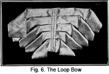This is one of the most appropriate and charming types of bows for back trimmings. It is quite simple to make, but if you prefer to have the fancy loop bow, you may finish the center with a little shirred ornament. Or you may make this center ornament of beads or flowers. It makes a most effective trimming touch to the hat, and the same style of finish may be used on the drooping loop bow, the loops of which droop over and fall backward. But first let us see how the simple loop is made. It requires two yards and thirty-two inches of ribbon No. 100, or more.
1. First cut one length of ribbon thirty-two inches long. Fold lengthwise through the center.
2. Fold the double length of thirty-two inch ribbon in such manner that the ends lap one-half inch in the center.
3. Now cut another length, twenty-eight inches long this time. Fold through the center as before. And as before, fold so that the ends lap one-half inch in the center.
4. Proceed to cut another length of ribbon twenty-four inches long, and fold as the others have been folded.
5. Prepare in the same way another length of twenty inches.
6. Prepare still another length sixteen inches long.
7. Begin with the thirty-inch length. Place it on the table with the lapped ends down and the lengthwise fold away from you.
8. Place the twenty-eight inch length in the same position as the first, but overlapping the first about one-third its width.
9. According to this arrangement, the unfinished ends of the ribbon will be at the back, the lengthwise fold at the top and each pair of loops will overlap the one above.
10. Proceed in this manner until all the loops are arranged correctly. Then measure from one end of the loops to the other and locate the exact center of each. Mark with a pin.
11. Finish your bow by making a row of stitching through the loops at the center and another row of stitching at each side of this center stitching.
If you wish this to be a drooping bow, pull the loops over gently so that they fall downward. Or, if you wish the loops to stand out straight, tack them lightly to the hat, or to themselves.
The loop bow is frequently used as the sole trimming on a tailored hat. But if the hat is not strictly tailored, the charm of the bow can be enhanced by the addition of tiny flowers at the center.
The Vertical Bow
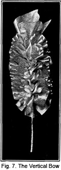When made of fine net or maline, in several shades of one color, the vertical bow makes a dressy and effective trimming. It requires four yards of four-inch ribbon cut in yard lengths. If made of net or maline, cut to correspond with these proportions.
1. In each yard length of ribbon or maline run a quarter-inch tuck lengthwise through the center, to within 4 inches of the end.
2. Cut four lengths of lace wire, nine inches long. Bend a small loop in one end of each length of wiring, leaving a tiny opening so that a stitch may be taken through it.
3. Run one of these wires through the tuck in the ribbon. The loop at the end of the wire should be caught with a back stitch to the rib bon at that point where the tuck ends, four inches from the end of the ribbon.
4. Draw the ribbon up on the wire until it is as full as desired.
5. Proceed to prepare each piece of ribbon with wire in exactly the same way.
6. Now group the four and wind the wire stems that remain with tie or flower wire. Then arrange in such manner that the wires meet in the center. Tack them together at the top and pull the edges of the ribbon out so that they look like full ruffles. Point the ribbon at the ends.
The Waterlily Bow
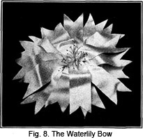Unusually pretty is this type of bow. It makes a most effective ornament, especially on a summer hat. Sometimes it is made of organdie, sometimes of satin, sometimes of fine French lawn. Organdie is probably the best material for summer-time water-lilies. The outer petals may be of green, the center petals of white; or if you prefer your lily may be entirely white with just the bit of yellow in the center.
1. To make, cut sixteen pieces of organdie, ten inches long and two inches wide. Fish-tail the ends. (To fish-tail, fold ends exactly in half and starting at the fold about one and one-half inches from the end, cut straight to the point. When opened the organdie strips will end in two points—like the tail of a fish.)
2. Hemstitch your strips of organdie on all sides and ends. Then cut the hemstitch in half to form a picot edge.
3. Make a small length wise plait in the center of each piece, pinning it in position.
4. Cross eight of these pieces in the center so that they form a round, flower-like ornament.
5. Cross the other eight in the same way.
6. Now arrange the stamens on the end of a wire. Use about twelve stamens with long stems.
7. Pass this wire stem through the center of the crossed petals and urge the petals gently against the stamens so that a real flower effect is obtained.
8. Wind the stem with green tissue or cover with a rubber stem. A well-made waterlily bow is all that is needed when trimming drooping-brim summer hat. It is so attractive that no other trimming is needed with it.
The Tailored Bow
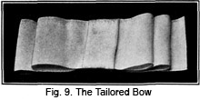You will find many occasions to use the tailored bow in your millinery experiences. There are times when nothing but the tailored bow is appropriate, when nothing else will do but this smart, neat finish.
To make the bow, you need three-quarter yards of two and one-half inch ribbon. The right side of the ribbon must always be uppermost, and in making the bow, all work is done from the right side.
1. Mark the center of the ribbon.
2. Make two graduated loops at the end of the ribbon.
3. Make two loops at the opposite end of the ribbon, leaving an end which is longer than the loops.
4. Now catch the loops together, leaving the center flat.
5. Take a piece of ribbon which is twice as long as it is wide. This is for the finishing piece. Fold it lengthwise in a box plait.
6. Bring the center of this box plait to the center of the bow, remembering that all this must be done on the right side.
7. Lap the raw ends under at the back so that no raw edges will be visible, and sew firmly in place.
The tailored bow is, of course, very simple and unpretentious. It is meant solely as a neat finish. Well-made tailored bows indicate good workmanship, but you must practice until you can achieve a bow that is absolutely neat and faultless in appearance.
The Wheel Bow
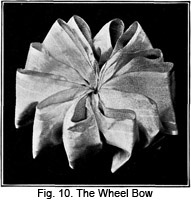To make a wheel bow you will require four yards of four to six inch ribbon. A piece for mounting should be two and one-half inches long and the width of the ribbon.
1. Gather one end of the ribbon and draw as tightly as possible.
2. Sew very closely to the end of the mounting piece.
3. Measure down twelve inches from the first gathering and draw up on a gathering string as before. Keeping the right side out, tack to the base of the first loop and through the mounting piece.
4. Pin the loop ends together, as they are made, and continue making loops of twelve inch lengths until the end of the ribbon is reached.
5. A strip of the foundation piece to which no loops have been sewed will remain. Beginning at the end of this piece, roll it tightly into a roll. Keep all the raw edges inside and sew firmly in place.
6. This tight roll of ribbon forms a foundation over which the foundation piece to which the loops are sewed may be rolled. Proceed to roll this part of the ribbon around the small roll, and sew it in such manner that the two ends of the ribbon loops meet.
7. Unpin the ends of the loops. Arrange the loops artistically—and your wheel bow is finished.
The Crush Bow
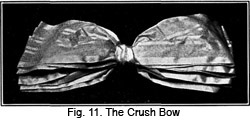You will require four yards of four-inch ribbon to make the crush bow. To make, follow these steps carefully.
1. First mark the center of the ribbon, which will give you two yards on each side of the center mark. In making the crush bow, you may make the loops any length you desire, the purpose for which the bow is to be used determining the correct length. Each loop is just one-half the length of the finished bow.
2. From the center mark, measure the distance of twice the length the finished loop will be. Gather and form into a loop.
3. Repeat until you have a number of loops for the top of the bow.
4. Now turn and begin at the center of the bow, arranging the required number of sections on the other side.
5. Form these sections into loops, leaving an end long enough to tie around the center. Tie this end as tightly as you can.
6. This bow requires no cutting, and there are no loose ends. It is made entirely of loops.
7. The crush bow must never be flat. When it is finished place your fingers inside each loop and shape them correctly.
The Shirred Bow
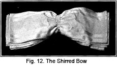To make the shirred bow, four yards of four-inch ribbon is needed. The ribbon must always be kept with the right side up, and you must practice a great deal before you venture to make this bow of good material. It must be made neatly and attractively, otherwise it will not make a pretty trimming.
1. Fold the ribbon in loops of equal length, beginning at the center of the ribbon and working each way until the entire amount of the ribbon is used up.
2. Machine stitch through the center and twice on each side of center stitching from edge to edge of the ribbon. These stitchings should be at least one-quarter of an inch apart.
3. Now run frame wire through the casings just made, and draw the bow up on these wires as tightly as you wish.
The Marguerite Bow
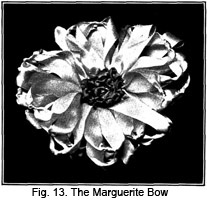When made of yellow petals with a brown center, or white petals with a yellow center, the marguerite bow is extremely pretty and effective. It requires seven yards of one and one-half inch ribbon. You will need one yard of the ribbon for the center and six yards for the petals.
1. First cut a mounting piece one and one-half or two inches long. Mark the six yards of ribbon in sections, each section six inches long. Tie a knot half way between these marks, and gather across the ribbon at the marks.
2. Now form the mounting piece into a disc as large as the material will permit. Turn the edge of it under, to make a finish. But do not turn over more than is necessary.
3. Gather the end of the ribbon and draw up the gathering at the first mark. Catch to the edge of the disc.
4. Tack the next loop at the side of the loop you have just made, and continue around the disc.
5. You now have the petals of your marguerite. To obtain the correct proportions, divide the ribbon into quarters and the disc into quarters. Make the loops of one-quarter of the ribbon fill exactly one-quarter of the disc.
6. For the center, tie knots in the ribbon used for that purpose as tightly and close together as you can tie them, and beginning at the center of the mounting piece, coil this around to form the center. Sew in place. This forms an attractive finish and center for your marguerite.
It is true that we mentioned once before the milliner's motto should be "Practice makes perfect." But we feel that we ought to repeat it in connection with bow-making. No matter how naturally clever you may be and how much good taste you may have, you cannot hope to become deft and quick unless you practice, constantly practice.
The two most important features of excellent bow-making are:
1st. That all loops and ends are firm at the root. There should be one common center at which all loops are attached. The center is called the root, and unless all ends and loops are firmly attached to it, they will hang limply and unattractively.
2nd. That the right side of the material is always out, and that the folds of the loops are round, not sharp, in outline.
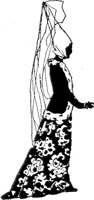LESSONS 12 AND 13
QUESTIONS
1. Name five fabrics which are suitable for the making of flowers.
2. In order to be a successful milliner it is necessary to keep up with the trimming styles. How may this be accomplished?
3. Give a very brief explanation of the making of ribbon violets.
4. What material should be used in the making of violets?
5. How may the deep creases be made in the velvet poppy?
6. What material is used to cover the wire stems when making the Cherokee Rose?
7. What determines the ultimate charm of your flower?
8. What is one of the most important things to remember in bow making?
9. What bow is appropriate and charming for trimming the back of a hat?
10. On what kind of a hat would the ribbon waterlily be appropriate?